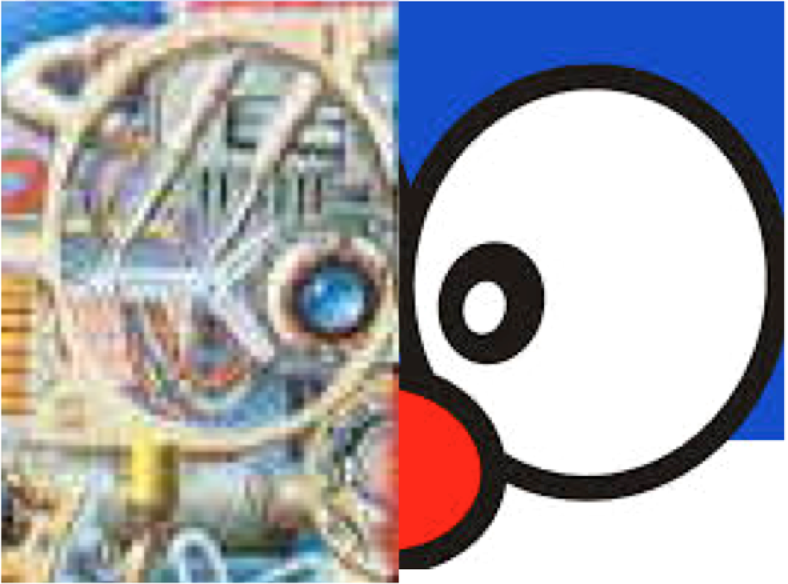

EE 6485 Computer Vision 計算機視覺
Fall 2014, Tuesday 5:30pm to 6:20pm, Thursday 3:30pm-5:20pn, Location DELTA台達202
Instructor: Min Sun
TAs: 蕭凡凱 codetectiveol@gmail.com
New!!! Show and tell Youtube Playlist

Course Description
Can computers understand the visual world as we could? This course treats vision as a process of inference from noisy and uncertain data and emphasizes probabilistic, statistical, data-driven approaches. Topics include image processing; segmentation, grouping, and boundary detection; recognition and detection; motion estimation and structure from motion. This class will also lead you to the discussion of applications applying state-of-the-art techbiques in recognition, detection, and video analysis.
The course will consist of four programming projects, one final project, and a few show-and-tell sessions. Please find information about projects and show-and-tell session in the syllabus.
Prerequisites
This course requires programming experience (mainly Matlab) as well as linear algebra, basic calculus, and basic probability. Previous knowledge of visual computing will be helpful.Textbook
Readings will be assigned in "Computer Vision: Algorithms and Applications" by Richard Szeliski. The book is available for free online or available for purchase.Grading
Your final grade will be made up from- 60% 4 programming projects
- 30% final projects (Project Ideas)
- 10% class participation
Important Links:
Contact Info and Office Hours:
You can contact the TA or the professor with any of the following:- Min Sun: sunmin@ee.nthu.edu.tw
- 蕭凡凱: codetectiveol@gmail.com
- Min Sun, 台達管962, 電話 035731058, 時間：Tuesday 2-4pm
- 蕭凡凱, 資電804, 電話 80991, 時間：Friday 10am-12pm
Tentative Syllabus
| lecture | Class Dates | Topic | Slides | Reading | Homework/Exam |
|---|---|---|---|---|---|
| 1 | T, Sept. 16 | Introduction to computer vision | Szeliski 1 | ||
| Image Formation and Filtering | |||||
| 2 | Th, Sept. 18 | Cameras and optics & git and github | Szeliski 2.1 especially 2.1.5 | homework 0 out | |
| 3 | T, Sept. 23 | Light and color | Szeliski 2.2 and 2.3 | ||
| 4 | Th, Sept. 25 | Image filtering & MATLAB Tutorial | Szeliski 3.2 | homework 0 due | |
| 5 | T, Sept. 30 | Thinking in frequency | Szeliski 3.4 | homework 1 out | |
| 6 | Th, Oct. 2 | Image pyramids and applications & show and tell (江長霖, 蕭善文, 蕭順仁, 李豪韋, and 洪介元) | Szeliski 3.5.2 and 8.1.1 | ||
| Feature Detection and Matching | |||||
| 7 | T, Oct. 7 | Edge detection | Szeliski 4.2 | ||
| 8 | Th, Oct. 9 | Interest points, corners, and local image features | Szeliski 4.2 | ||
| 9 | T, Oct. 14 | Feature matching and hough transform | Szeliski 4.3 | homework 1 due | |
| 10 | Th, Oct. 16 | Model fitting and RANSAC & show and tell (陳奕安, 程韋翰, 張馨云, 陳亘宇, 陳嘉臨, 林維誠, and 廖育賢) | Szeliski 4.3 | homework 2 out | |
| 11 | T, Oct. 21 | *Panorama Stitching | Szeliski 9 | ||
| Multiple Views and Motiong | |||||
| 12 | Th, Oct. 23 | Stereo and Structure from Motion | pdf1, pdf2 | Szeliski 7 | |
| 13 | T, Oct. 28 | Feature Tracking and Optical Flow | Szeliski 4.1.4 and 8.4 | ||
| Machine Learning Crash Course | |||||
| 14 | Th, Oct. 30 | Machine learning intro and clustering | Szeliski 5.3 | homework 2 due & project proposal due | |
| 15 | T, Nov. 4 | Machine learning: classification | homework 3 out | ||
| Recognition | |||||
| 16 | Th, Nov. 6 | *Recognition overview, bag of features, large-scale instance recognition | Szeliski 14, 4.1, and 4.3 | ||
| 17 | T, Nov. 11 | *Scene recognition | Szeliski xx | ||
| 18 | Th, Nov. 13 | Detection with sliding windows: Viola Jones | Szeliski 14.1 | ||
| 19 | T, Nov. 18 | *Mixture of Gaussians and advanced feature encoding | Szeliski xx | homework 3 due | |
| 20 | Th, Nov. 20 | *Modern Object Detection & show and tell (林柏俊, 林育堂, 鈕采紋, 賴柏村, 陳瑋晨, 黃家琬, 呂立嫻, and 郭達人) | Szeliski xx | homework 4 out | |
| 21 | T, Nov. 25 | *3D Object Dection and Pose Estimation | Szeliski xx | ||
| 22 | Th, Nov. 27 | *Working with RGB-D | Szeliski xx | ||
| 23 | T, Dec. 2 | *Image Parsing | Szeliski xx | ||
| 24 | Th, Dec. 4 | Context and Spatial Layout | Szeliski 14.5 | homework 4 due | |
| 25 | T, Dec. 9 | Internet scale vision | |||
| 26 | Th, Dec. 11 | Human computation and crowdsourcing | midterm project report due | ||
| 27 | T, Dec. 16 | Attributes and more crowdsourcing | |||
| 28 | Th, Dec. 18 | *Modern boundary detection and Pb & show and tell (余若君, 吳品樺, 黃立仁, 黃俊穎, 黃彥學, and 史敦槐) | |||
| 29 | T, Dec. 23 | *Human pose estimation | |||
| 30 | Th, Dec. 25 | *Action and Event | |||
| 31 | T, Dec. 30 | Project Pitch | |||
| No Class | Th, Jan. 1 | 元旦 Happy new year | |||
| 32 | T, Jan. 6 | *Video analysis | |||
| 33 | Th, Jan. 8 | *Mobile Vision | |||
| 34 | T, Jan. 13 | Project presentation | |||
| 35 | Th, Jan. 15 | Project presentation | final project report due |
Project Proposal Format:
- max 4 pages;- 3 sections:
- title and authors
- sec 1. intro: problem you want to solve and why
- sec 2. technical part: how do you propose to solve it?
- sec 3. milestones (dates and sub-goals)
- references
Project Progress (mid-term) Report Format:
- max 4 pages;- 3 sections:
- title and authors
- sec 1. intro: problem you want to solve and why
- sec 2. technical part: how do you propose to solve it?
- sec 3. milestones achieved so far
- sec 4. remaining milestones (dates and sub-goals)
- references
Project Final Report Format:
- Max 10 pages;- Title and authors
- Abstract: short summary of the project with main results
- 6 sections:
- Sec 1. Introduction: introduce the problem you want to solve, expain why it is important to solve it; and indicate the method you used to solve it. add a concept figure showing the overall idea behind the method you are presenting.
- Sec 2.1. Review of previous work (i.e. previous methods that have explored a similar problem)
- Sec 2.2. Say why your method is better than previous work; and/or summarize the key main contributions of your work;
- Sec 3.1: Technical part: Summary of the technical solution
- Sec 3.2: Technical part: Details of the technical solution; you may want to decompose this section into several subsections; add figures to help your explanation.
- Sec 4: Experiments: present here experimental results of the method you have implemented with plots, graphs, images and visualizations.
- Sec 5: Conclusions: what's the take home message?
- Sec 6: References
You can look at one of the recent instructor publications (such as this) as an example.
Project Report Evaluation:
- Your project report will be evaluated based on the quality of the writing, the clarity of your technical explanation and, overall, how well you get your message across. If you follow the structure above, you'll have good chances to do a good job. :)Project Source Code:
There is no need to attach a print out of the source codes to the manuscript. Final source codes of your working program need to be shared with TA and the instructor on github; this file is due on the project submission deadline date.Project Presentation in Class:
- The presentation must be TBA long. Please see this iLMS post for detailed presentation guidelines, which are also summarized below.Presentation format:
Your slides should consist of a title slide, followed by slides that discuss the following aspects of your project:- Problem Motivation/Description
- Technical Approach
- Some Results